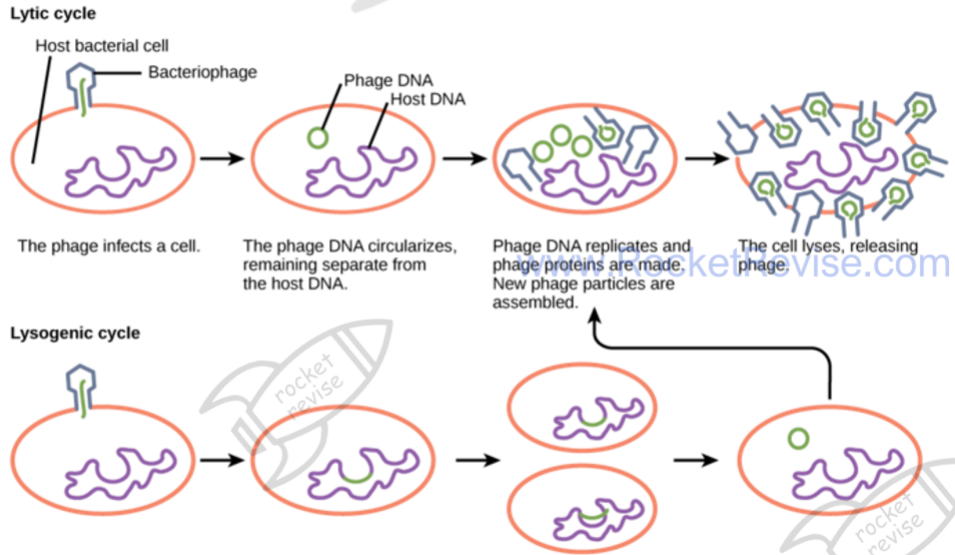
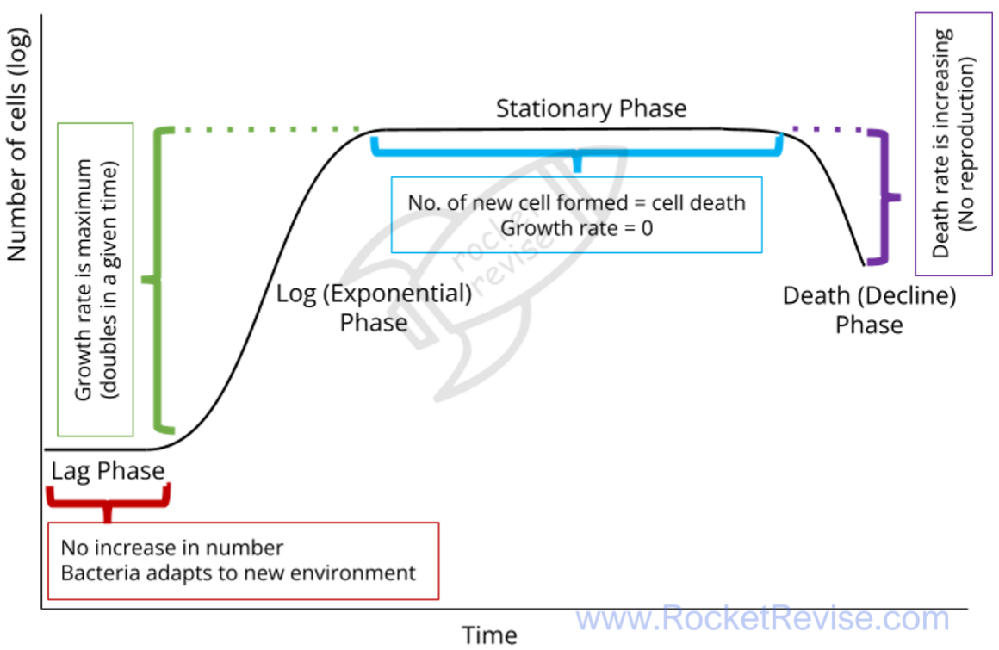
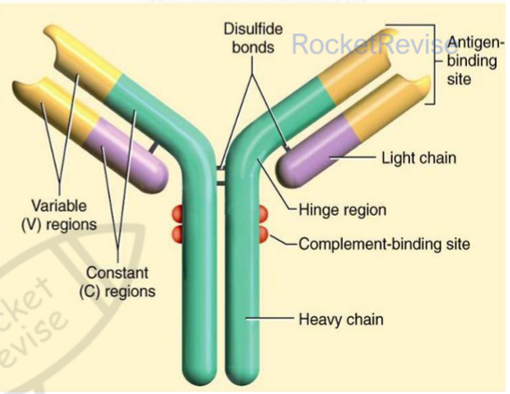
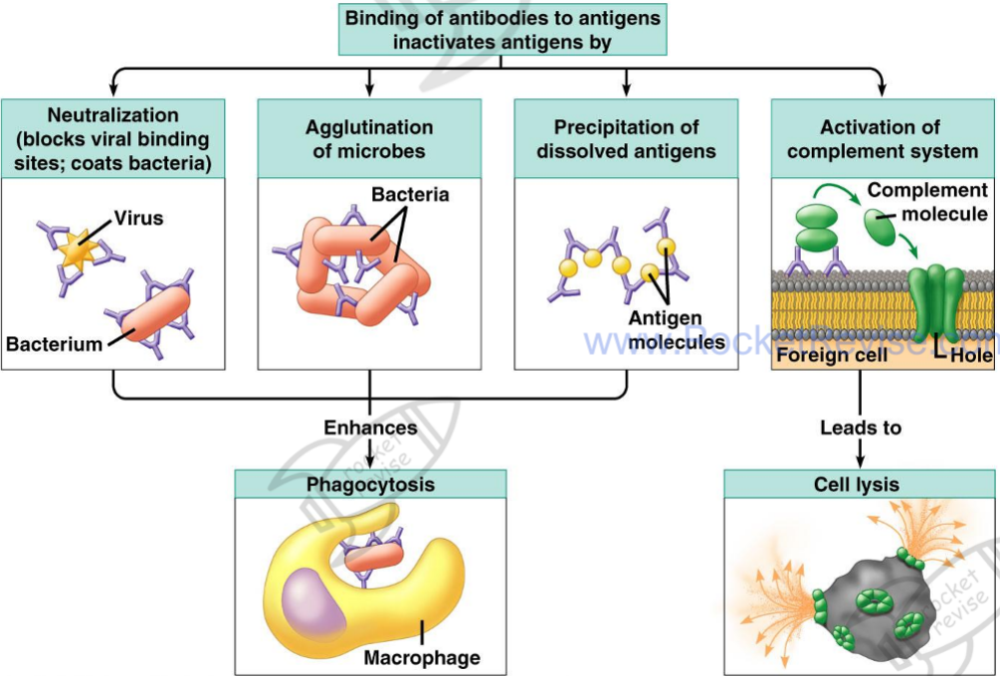

Microbiology and immunity
Most microorganisms are harmless or useful, but some cause disease. This page covers how bacteria and viruses are built and reproduce, how microbiologists culture and count them safely, how tuberculosis and HIV cause disease, how the body defends itself, and how antibiotics work and why bacteria become resistant to them.
1. Bacteria and viruses
A bacterium is a prokaryotic cell. Its DNA is a single circular molecule lying free in the cytoplasm. All bacteria have a cell surface membrane, 70S ribosomes and a peptidoglycan (murein) cell wall, which stops the cell bursting when water enters by osmosis. Some also have plasmids, small loops of DNA that often carry antibiotic resistance genes; flagella for movement; pili, which help cells stick together and can transfer DNA; and a capsule or slime layer that protects them from immune cells.
A virus is not a cell. It is a nucleic acid, DNA or RNA, inside a protein coat (capsid), and some viruses also have a lipid envelope taken from the last host cell, carrying glycoproteins that bind to receptors on new host cells. With no ribosomes or metabolism of its own, a virus can only reproduce inside a living host cell: it is an obligate intracellular parasite.
| Virus | Nucleic acid | Capsid and envelope | Host |
|---|---|---|---|
| Human immunodeficiency virus (HIV) | Two copies of single-stranded RNA, with the enzyme reverse transcriptase | Capsid inside a lipid envelope carrying glycoprotein gp120 | Human helper T cells |
| Ebola virus | Single-stranded RNA, with an RNA polymerase that copies it | Long, thread-like capsid inside a lipid envelope with glycoprotein spikes | Humans and other primates |
| Tobacco mosaic virus (TMV) | Single-stranded RNA | Rod-shaped capsid of protein units arranged in a spiral; no envelope | Tobacco and related plants |
| Lambda (λ) phage | Double-stranded DNA, which forms a circle inside the host | Head (capsid), tail and tail fibres; no envelope | The bacterium E. coli |
| Feature | Bacterium | Virus |
|---|---|---|
| Cellular? | Yes, a prokaryotic cell | No, a particle |
| Nucleic acid | Double-stranded circular DNA, plus any plasmids | DNA or RNA, single- or double-stranded |
| Outer layers | Membrane and peptidoglycan wall, sometimes a capsule | Protein capsid, sometimes a lipid envelope |
| Ribosomes and metabolism | Own 70S ribosomes and enzymes | None; uses the host cell's |
| Reproduction | Binary fission | Only inside a host cell |
Lytic and latent infection
Inside a host cell a virus can follow one of two routes. In the lytic pathway, the host's enzymes and ribosomes copy the viral nucleic acid and make capsid proteins, new particles are assembled, and the cell bursts (lyses), releasing them. A virus in this pathway is virulent: it causes disease.
In the lysogenic pathway, the viral DNA is inserted into the host's DNA as a provirus (a prophage in a bacterium) and is copied whenever the host divides. A viral repressor protein stops the other viral genes being transcribed, so the virus is latent: present but inactive. If the host cell is damaged or stressed, the repressor is lost and the virus enters the lytic pathway. HIV and TB can both stay latent for years.

2. Culturing microorganisms safely
Even a harmless culture carries risks: it could be contaminated by pathogens from the environment, or a pathogenic mutant could arise. Aseptic technique keeps the culture pure and protects the worker and the environment.
- Sterilise beforehand: media and glassware are heated in an autoclave at 121 °C for 15 minutes under pressure, which kills bacteria and their spores. Wire inoculating loops are heated in a Bunsen flame until red hot.
- Work aseptically: disinfect the bench, work close to a Bunsen flame so that rising air carries microbes away, flame the necks of bottles, and lift Petri dish lids as little as possible.
- Incubate safely: tape the lid of a Petri dish without sealing it completely, so that anaerobic pathogens are not encouraged, and incubate at about 25 °C, well below human body temperature, so that human pathogens are not favoured.
- Dispose safely: autoclave all cultures and equipment before disposal.
Cultures are grown in nutrient broth (liquid) or on nutrient agar (solid), which supply carbon, nitrogen and minerals; on agar each cell grows into a separate colony. A selective medium lets only certain microorganisms grow: a low-pH medium suppresses bacteria but lets fungi grow, and a medium containing an antibiotic picks out resistant strains, including genetically modified microorganisms carrying a resistance marker gene. Growing cultures with or without oxygen also selects aerobic or anaerobic species. Indicator media change colour around colonies of certain bacteria, so those colonies can be identified.
Growth depends on temperature, pH, nutrients, oxygen and water. Growth is fastest at the optimum temperature of the microorganism's enzymes; above it enzymes denature and cells die. In a fridge (0 to 5 °C) enzymes have little kinetic energy, so growth and decay are slow. In a freezer the cytoplasm freezes, so enzyme and substrate molecules cannot move and collide, and growth stops.
3. Measuring microbial growth
Microbial growth is an increase in the number of cells, or in the mass, of a population.
- Cell counts: a haemocytometer is a slide with a chamber of known depth and a ruled grid, so cells in a known volume can be counted under a microscope.
- Dilution plating: a culture is serially diluted, a known volume of each dilution is spread on agar, and colonies are counted after incubation. Each colony is assumed to come from one living cell, so this is a viable count. A plate with separate, countable colonies is used, and the count is multiplied by the dilution factor.
- Turbidity: a colorimeter measures how cloudy a broth is; more cells absorb more light. A calibration curve, made from samples whose cells have also been counted, converts absorbance into cell numbers.
- Mass: cells are filtered or centrifuged from the broth and dried to constant mass. This suits fungi, whose hyphae cannot be counted; fungal growth on agar can also be followed by measuring colony diameter.
Count the cells in a square of known volume. Suppose there are 15 cells in 0.004 mm³ of a culture that was diluted 1 in 1000.
Count cells touching the top and left lines of a square but not those touching the bottom and right lines, so no cell is counted twice.
Cells per mm³ = 15 ÷ 0.004 = 3750.
Convert to cm³ (1 cm³ = 1000 mm³): 3750 × 1000 = 3.75 × 10⁶ cells per cm³.
Multiply by the dilution factor: 3.75 × 10⁶ × 1000 = 3.75 × 10⁹ cells per cm³ of the original culture.
The count was made on a diluted sample, so the dilution must be reversed.
Dilution plating works the same way: divide the colony count by the volume spread on the plate and multiply by the dilution factor.
| Method | Advantages | Disadvantages |
|---|---|---|
| Haemocytometer | Quick and cheap; shows cell shape; a stain such as trypan blue colours dead cells so they can be excluded | Very small cells are hard to see; moving cells must be immobilised |
| Dilution plating | Counts only living cells | Slow, needs incubation; a clump of cells gives only one colony; only cells that grow in the conditions provided are counted |
| Turbidity | Fast; repeated readings can be taken from one culture | Does not distinguish living cells from dead cells or other particles; needs calibration |
4. Bacterial growth curves
Bacteria reproduce asexually by binary fission. The circular DNA is copied, the cell grows longer, and a cross-wall forms between the two copies, dividing the cell into two genetically identical daughter cells. The time between divisions is the generation time; in ideal conditions some species divide every 20 minutes, though most take longer.
When bacteria are put into fresh broth, the population passes through four phases. In the lag phase the cells are adapting, for example by making the enzymes they need, so numbers hardly rise. In the exponential (log) phase nutrients are plentiful and waste is low, so the cells divide as fast as they can and the population doubles every generation. In the stationary phase nutrients run short and toxic waste builds up, so the rate of division equals the rate of death and the number stays constant. In the death (decline) phase more cells die than are produced.

Cell numbers rise so fast that they are plotted on a logarithmic scale, on which the exponential phase is a straight line. During this phase the number of cells is given by Nt = N0 × 2kt, where N0 is the starting number, Nt the number after time t and k the growth rate constant, the number of generations per hour. Rearranging gives:
k = (log₁₀ Nt − log₁₀ N0) ÷ (log₁₀ 2 × t). Use it only for the exponential phase.
A culture grows from 1 cell to 1024 cells in 5 hours of exponential growth. List the values: N0 = 1, Nt = 1024, t = 5 h.
log₁₀ 1024 = 3.01 and log₁₀ 1 = 0.
k = (3.01 − 0) ÷ (0.301 × 5) = 3.01 ÷ 1.505 = 2.0 generations per hour.
Check: 1024 = 2¹⁰, so there were 10 generations in 5 hours, which is 2 per hour.
The graph below models a broth culture, and the triangle measures k from the gradient of the log graph.
Core practical: growth in a liquid culture. Keep a yeast culture in glucose solution at constant temperature, stirred so cells stay suspended and nutrients and oxygen are spread evenly. At intervals, remove samples with a sterile pipette and measure absorbance in a colorimeter. Plot log absorbance against time, identify the lag and exponential phases, and calculate k using absorbance in place of cell number. Yeast is a safe, ethical choice because it has no nervous system.
5. Pathogens: how they enter and what stops them
Pathogens enter the body by several routes:
- Inhalation: droplets from coughs and sneezes carry pathogens; some droplets dry into tiny particles that stay in the air for a long time.
- Ingestion: in food or water contaminated with pathogens, often from faeces.
- Inoculation: directly through a break in the skin, such as a cut, an animal bite or a shared needle.
- Vectors: living organisms, such as insects, that carry a pathogen from one host to another.
- Fomites: objects such as towels, bedding and medical equipment that carry pathogens between people.
- Direct contact: touching, as in many skin infections and sexually transmitted infections.
The first line of defence is a set of barriers. The skin's outer layer is made of dead cells packed with the tough protein keratin, so pathogens cannot get through unbroken skin. Sebaceous glands secrete sebum, and sweat contains substances such as lactic acid, which make the skin surface acidic and inhibit microbial growth. The airways and other internal tubes are lined with cells that secrete mucus, which traps microorganisms, and cilia sweep the mucus away to be swallowed. Tears, saliva and mucus contain lysozyme, an enzyme that breaks down bacterial cell walls. Hydrochloric acid in the stomach kills most microorganisms in food.
The skin and gut are also covered by harmless bacteria, the skin flora and gut flora, which are adapted to live there. These commensal bacteria compete with pathogens for space and nutrients and outcompete them, and some secrete substances that inhibit pathogens.
6. Tuberculosis and HIV
Tuberculosis
Tuberculosis (TB) is caused by Mycobacterium tuberculosis, a rod-shaped aerobic bacterium with a thick, waxy coat that protects it from drying, disinfectants and digestion by macrophages. It spreads mainly in droplets from coughs and sneezes. In the lungs, macrophages engulf the bacteria, but many survive and multiply inside them. The body walls off the infected area in a granuloma (tubercle) of macrophages, other immune cells and dead tissue, and the bacteria can survive there for years as latent TB.
If the immune system is weakened, for example by HIV, the bacteria break out and active TB develops. Destruction of alveoli reduces the surface area for gas exchange, causing breathlessness, and damaged tissue and blood vessels cause a persistent cough with blood in the sputum, along with fever, tiredness and weight loss. TB also suppresses the immune system by reducing T cell numbers. Death can follow from respiratory failure, spread to other organs, or opportunistic infections.
HIV and AIDS
HIV is a retrovirus. Its glycoprotein gp120 binds to CD4 receptors on helper T cells and the envelope fuses with the cell surface membrane, releasing the capsid into the cell. Reverse transcriptase copies the viral RNA into double-stranded DNA, which integrase inserts into the host's DNA as a provirus, where it can stay latent for years. When the T cell is activated, the host's RNA polymerase transcribes the provirus. The viral RNA acts as mRNA for viral proteins and as the genome of new viruses, which bud from the cell, taking some of its membrane as their envelope.
Infected helper T cells are destroyed as viruses bud out and by killer T cells. Helper T cells are needed to activate B cells and killer T cells, so as their number falls the specific immune response fails. A person can be HIV positive for years with few symptoms; AIDS is the late stage, when the helper T cell count is very low and opportunistic infections such as TB and pneumonia cause death. HIV is treated with a mixture of drugs, because it mutates rapidly and a strain resistant to one drug is unlikely to resist them all.
7. The non-specific response
If a pathogen gets past the barriers, non-specific responses act against any foreign material, without needing to recognise the particular pathogen.
- Inflammation: damaged tissue causes mast cells to release histamine. Histamine makes arterioles dilate, so more blood flows to the area, which becomes red and hot, and makes capillary walls more permeable, so fluid, phagocytes and antimicrobial proteins leave the blood. The tissue swells.
- Phagocytosis: phagocytes such as neutrophils and macrophages engulf a pathogen into a vacuole (phagosome). Lysosomes fuse with it and release enzymes that digest the pathogen. A macrophage then displays the pathogen's antigens on its surface and becomes an antigen-presenting cell.
- Lysozyme: an enzyme in tears, saliva and mucus that breaks down bacterial cell walls, so the bacteria burst.
- Interferon: a protein released by virus-infected cells. It makes neighbouring cells produce proteins that inhibit viral protein synthesis, so the virus cannot spread easily, and it helps to activate immune cells.
8. The specific immune response
An antigen is a molecule, usually a protein or glycoprotein on a cell surface, that the body recognises as foreign and that triggers an immune response. Lymphocytes carry receptors of one shape, so each recognises only one antigen. B cells mature in the bone marrow, and T cells mature in the thymus.
A macrophage engulfs the pathogen and displays its antigens on its surface. It is now an antigen-presenting cell (APC).
A T helper cell with a complementary receptor binds to the antigen on the APC. It is activated and divides by mitosis into a clone of active T helper cells and T memory cells.
A B cell with a complementary receptor binds the same antigen, takes it in and presents it, becoming an APC itself. An active T helper cell binds to it and releases cytokines.
The B cell cannot be fully activated without these cytokines, which is one reason the first response is slow.
The activated B cell divides to form a clone of B effector cells and B memory cells. B effector cells differentiate into plasma cells, which secrete antibodies; this is the humoral response.
Plasma cells have extensive rough endoplasmic reticulum to make antibody protein and many mitochondria to supply ATP.
Cytokines from T helper cells also activate T killer cells with complementary receptors, which divide into active T killer cells and T memory cells.
In the cell-mediated response, T killer cells bind to body cells displaying the antigen, such as virus-infected cells, and release chemicals that make pores in their membranes, so the cells burst. Phagocytes engulf the released pathogens.
| Cell | Role |
|---|---|
| B effector cell | Differentiates into plasma cells, which secrete antibodies |
| B memory cell | Persists for years; divides rapidly into plasma cells if the antigen returns |
| T helper cell | Releases cytokines that activate B cells and T killer cells and stimulate phagocytes |
| T killer cell | Destroys infected body cells displaying the antigen |
| T memory cell | Persists; gives a fast T cell response if the antigen returns |
Antibodies
An antibody (immunoglobulin) is a protein with quaternary structure: two long heavy chains and two short light chains held together by disulfide bonds. The tips of the arms are the variable regions, whose shape differs between antibodies and is complementary to one antigen. The rest is the constant region, the same in antibodies of one class, which binds to receptors on phagocytes. A flexible hinge lets the two arms bind antigens at different distances apart.

Antibodies neutralise viruses and toxins by blocking their binding sites, clump pathogens together (agglutination) and make dissolved antigens precipitate, all of which make phagocytosis easier. They also activate complement proteins, which make holes in a foreign cell's membrane so that it bursts.

Primary and secondary responses
On first exposure to an antigen, only a few lymphocytes have the matching receptor, and they must be activated, divide and differentiate before antibodies appear. This primary response takes about 10 to 17 days, so symptoms usually develop. Memory cells from the primary response persist for months or years. If the same antigen returns, they divide rapidly into plasma cells and T killer cells, so the secondary response is faster and produces far more antibody, and the pathogen is usually destroyed before symptoms appear. The person is immune.
The graph below compares the two responses, and the ways in which immunity can be acquired.
9. Natural, artificial, active and passive immunity
In active immunity the body makes its own antibodies and memory cells, so protection takes time to develop but lasts. In passive immunity ready-made antibodies are received; they protect at once, but no memory cells form and the antibodies are soon broken down.
| Type | How it is acquired | Memory cells? |
|---|---|---|
| Natural active | Infection by the pathogen | Yes: long-lasting |
| Artificial active | Vaccination with a dead or weakened pathogen or its antigens, which triggers the immune response without the disease | Yes: long-lasting |
| Natural passive | Antibodies from the mother across the placenta and in breast milk, especially colostrum | No: short-term |
| Artificial passive | Injection of antibodies made in another person or animal | No: short-term |
10. The evolutionary race between pathogens and hosts
Hosts and pathogens exert selection pressures on each other. Pathogens with mutations that help them avoid the immune response survive and reproduce, while hosts that resist infection better are more likely to survive and reproduce. Pathogens have short generation times and huge populations, so new mutations arise often and they evolve quickly. The many ways pathogens evade the immune system are evidence for this evolutionary race.
- HIV: destroys the helper T cells that coordinate the immune response; mutates rapidly, so its antigens keep changing and antibodies and memory cells no longer recognise them; and hides as a latent provirus inside host cells.
- M. tuberculosis: its waxy coat resists digestion, so it survives inside macrophages where antibodies cannot reach it; it can interfere with antigen presentation; and it can stay latent inside granulomas for years.
- Antibiotic resistance: the use of antibiotics is a further selection pressure that pathogens have evolved to resist.
11. Antibiotics
Antibiotics are chemicals, originally made by microorganisms, that kill or inhibit bacteria. Bactericidal antibiotics, such as penicillin, kill bacteria. Bacteriostatic antibiotics, such as erythromycin, stop them multiplying, giving the immune system time to destroy them; if the drug is removed, the bacteria can grow again. The effect also depends on dose: at high doses some bacteriostatic antibiotics kill many bacteria. Broad-spectrum antibiotics act against many kinds of bacteria, including useful gut bacteria; narrow-spectrum antibiotics act against a few.
Antibiotics target features that bacteria have but human cells lack or that differ. Some inhibit peptidoglycan synthesis, so the weakened wall bursts by osmotic lysis. Others bind to 70S ribosomes and stop protein synthesis without affecting human 80S ribosomes. Others damage the membrane, inhibit DNA replication or transcription, or block specific enzymes. Antibiotics do not work against viruses, which have no wall, ribosomes or metabolism of their own.
Core practical: effect of different antibiotics on bacteria. Using aseptic technique, spread a bacterial culture over nutrient agar and place on it discs soaked in different antibiotics, plus a control disc soaked in sterile water. After incubation, measure the diameter of the clear zone of inhibition around each disc and calculate its area with πr². A larger clear zone indicates a more effective antibiotic at that concentration.
How resistance spreads
Resistance arises by random mutation, for example one that makes the wall impermeable to the drug or lets the bacterium make an enzyme that breaks it down. The antibiotic is a selection pressure: susceptible bacteria die, while resistant ones survive, multiply and pass on the resistance allele (vertical transmission), so its frequency rises. Resistance genes on plasmids can also pass between bacteria, even of different species, by conjugation through pili (horizontal transmission).
Hospital-acquired infections
Hospital-acquired (nosocomial) infections, such as MRSA (methicillin-resistant Staphylococcus aureus) and Clostridium difficile, are caught in hospital. Patients are often weak or have wounds or medical devices, many antibiotics are used, and pathogens pass easily between patients on hands, equipment and bedding. Understanding these causes has led to codes of practice.
- Prescribing: use antibiotics only when needed, never for viral infections or "just in case"; choose a narrow-spectrum drug suited to the infection; make sure patients finish the course; and rotate the antibiotics used.
- Infection control: hand washing, gloves and aprons; isolating infected patients; screening patients on admission; no jewellery or outdoor clothing on wards; safe disposal of dressings and needles; sterilising bedding and equipment.
Two reasons not to use a broad-spectrum antibiotic unnecessarily: it kills useful bacteria as well as pathogens, and it puts selection pressure on many species at once.
12. Quick checks
In which phase of a bacterial growth curve can the growth rate constant k be calculated?
The formula assumes that the population doubles at a constant rate, which is only true in the exponential phase, where log cell number rises in a straight line. In the stationary phase division and death are balanced, so the line is flat.
Which feature is found in HIV but not in tobacco mosaic virus?
Both viruses have RNA and a protein capsid, but only HIV has a lipid envelope and reverse transcriptase. No virus has ribosomes.
Which statement correctly describes latency in a virus such as lambda phage?
In the lysogenic pathway the viral DNA becomes part of the host chromosome, is copied each time the cell divides and is kept inactive by a repressor protein. Bursting the cell at once describes the lytic pathway, the commonest wrong answer.
Which cells secrete antibodies?
Activated B cells divide into B effector and B memory cells, and B effector cells differentiate into plasma cells that secrete antibodies. T helper cells release cytokines, not antibodies, which is the commonest confusion.
Why do antibodies a baby receives in breast milk give only short-term protection?
In natural passive immunity the baby's own immune system is not activated, so no memory cells form, and the received antibodies are gradually broken down. Lasting protection needs active immunity.
How does a bacteriostatic antibiotic differ from a bactericidal one?
Bacteriostatic drugs prevent multiplication, often by blocking protein synthesis, so the immune system can remove the bacteria. Bactericidal drugs kill them. No antibiotic works against viruses.